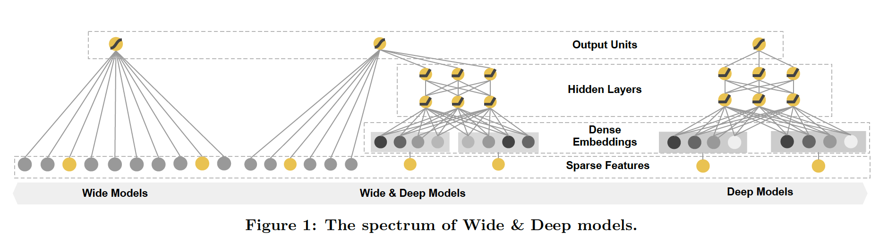
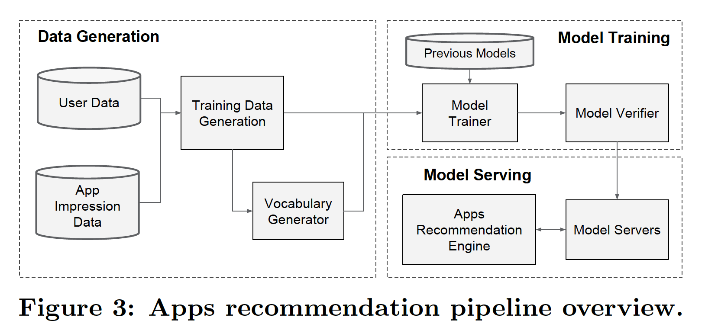
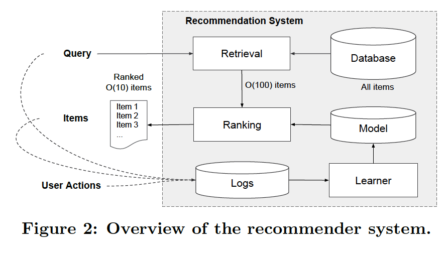
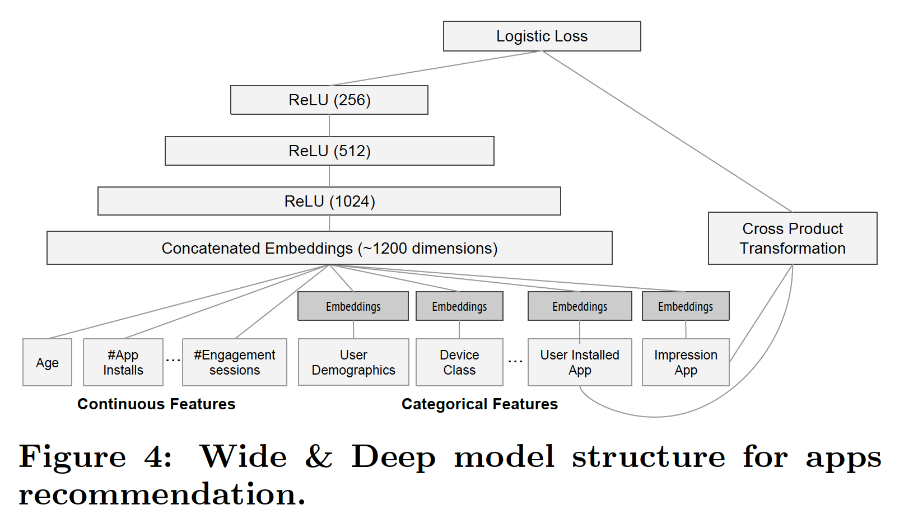

论文：Wide & Deep Learning for Recommender Systems
Wide&Deep 的 Wide部分是单层的神经网络，有利于增强模型的“记忆能力”，可以简单得理解为直接的、显然的关联规则能力，比如在论文的应用希望在 Wide 部分发现 “用户安装了应用A，这时给用户推荐应用 B，用户安装 B 的概率很大” 这样的规则。Deep部分是多层神经网络，有利于增强模型的“泛化能力”，把所有能得到的特征都扔进这个黑盒去拟合函数，这个过程会把一些直接的因果关系模糊掉，泛化成一些间接的可能的相关性。

输出层由softmax 和 logistics regression 综合输出。 Wide 部分训练时采用 L1 FTRL，是为了让 Wide 部分变得更加稀疏，即让 Wide 大部分权重变成0。FTRL 是一个稀疏性很好，还能达到不错精度的随机梯度下降方法，是线性模型在线训练的主要方法。随机梯度下降可以做到来一个样本就训练更新一次参数，因此可以实现模型的在线更新。而 L1 正则化比 L2 正则化更容易产生稀疏解。这样 Wide 大部分权重变成0，准备特征的时候就不用准备那么多 0 权重特征了，可以大大压缩模型权重，压缩特征向量的维度。

稀疏性对模型的精度会有负面影响，这里之所以要考虑让 Wide 部分稀疏，是因为特征向量的维度太高了。Google Play 在选取 Wide 部分 的特征时，为了发现当前曝光 app 和用户安装 app 的关联关系，用的是 User Installed App 和 Impression App 两个 id 类特征来直接影响最终的得分结果。但是两个 id 类的特征向量进行组合，在维度爆炸的同时，会让原本已经非常稀疏的 multihot 特征向量，变得更加稀疏。因此 wide 部分的权重数量其实是海量的，为了不把海量的权重都搬到线上进行 model serving，所以通过 L1 FTRL 把那些稀疏特征过滤掉。
而 Deep 部分不需要特别考虑稀疏性，Deep 部分的输入是 Age，App installs 等数值类特征，要么是已经降维并且稠密化的 Embedding 向量，大家也不敢把过度稀疏的特征向量直接输入到 Deep 网络中。所以 Deep 部分不存在严重的特征稀疏问题，所以选择使用精度更好，更适用于深度学习训练的 AdaGrad 去训练。

